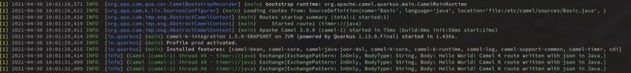

As part of our continuous work to improve Camel K and improve its stability, features and usefulness to our community, we recently worked on logging improvements for different parts of Camel K and the integrations it generated.
During the 1.5 development release we dedicated some time to review the logging capabilities of Camel K. This version introduces a new logging trait that simplifies access to the logging configuration available on the runtime.
Colorized logs
By default, Camel K will colorize the log output, making it easier to distinguish between log levels, loggers, timestamps and the logging message. Naturally, we understand that not everyone likes colorized logs. As such it’s possible to disable it by using the logging.color trait option.
This is what it looks like:

Easier support for additional debug levels
Additional log levels can be turned on or off at ease, using the logging.level trait. Users can inform the minimum log level (i.e.: TRACE, DEBUG, INFO, etc) and control how much information is presented by the logger.
Custom logging format
Leveraging the previous features, it’s also possible to control the format of the displayed message. The logging.format trait provides the ability to control what fields will be logged, their formats and their orders.
For example, you can customize the log message so that it displays the hour, the log level, the thread name, the message, the exception information, finished with a new line. To do so, you can use the following to set the logging format:
--trait logging.format='%d{HH:mm:ss} %-5p (%t) %s%e%n'.
This would result in log messages similar to these:
[1] 11:21:59 INFO (main) Apache Camel 3.9.0 (camel-1) started in 74ms (build:0ms init:58ms start:16ms)
[1] 11:21:59 INFO (main) camel-k-integration 1.5.0-SNAPSHOT on JVM (powered by Quarkus 1.13.0.Final) started in 1.362s.
Since the runtime leverages Camel Quarkus and, by extension, Quarkus itself, all the logging format symbols suported by Quarkus can be used to customize the integration logs.
Logging in JSON format
Although log colorization is a nice improvement to the usability of Camel K in development mode, most users will eventually run the integrations in production. In such scenarios, it’s not uncommon to use tools such as FluentD or Logstash to consume the logs and run all sorts of processing on top of them. Structured logging, in JSON format, makes it possible to reuse plugins available in those tools and may simplify the job of processing them.
{"timestamp":"2021-05-10T11:28:26.99Z","sequence":99,"loggerClassName":"org.jboss.logging.Logger","loggerName":"io.quarkus","level":"INFO","message":"Installed features: [camel-bean, camel-core, camel-java-joor-dsl, camel-k-core, camel-k-runtime, camel-log, camel-support-common, camel-timer, cdi]","threadName":"main","threadId":1,"mdc":{},"ndc":"","hostName":"basic-5b57bcf589-kbzvp","processName":"io.quarkus.bootstrap.runner.QuarkusEntryPoint","processId":1}
Maven Build Logs
Lastly, we also modified the Camel K operator itself so that we normalize the log format of the integration’s build messages. Previously, our build would output unstructured log messages for the build process, which would make it more complicated to parse and process the messages for build errors.
{"level":"info","ts":1620393185.321101,"logger":"camel-k.maven.build","msg":"Downloading from repository-000: http://my.repository.com:8081/artifactory/fuse-brno/org/jboss/shrinkwrap/resolver/shrinkwrap-resolver-bom/2.2.4/shrinkwrap-resolver-bom-2.2.4.pom"}
All in all, these set of small logging improvements aim to make Camel K friendlier for the developer and more flexible for different monitoring use cases, eventually simplifying running integrations in an autonomous way.
Do you have any suggestions about how we could improve usability and make Camel K operate even more autonomously? Let us know.